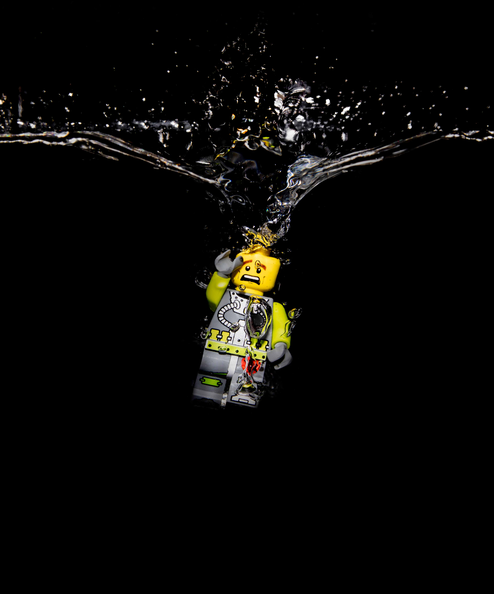
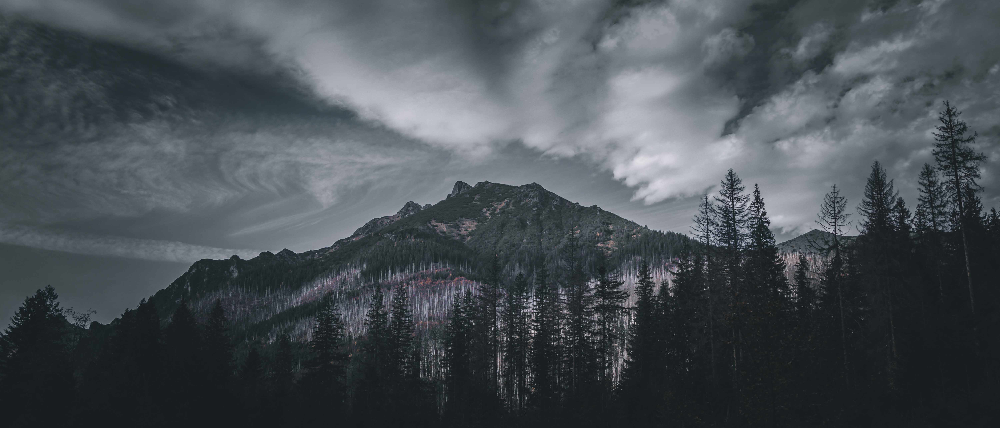
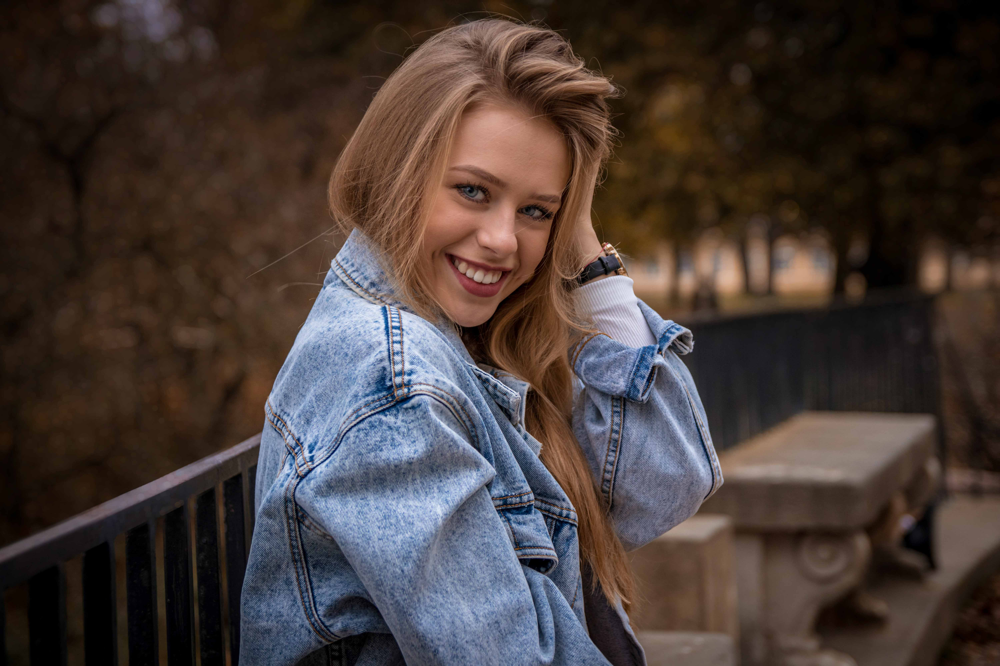
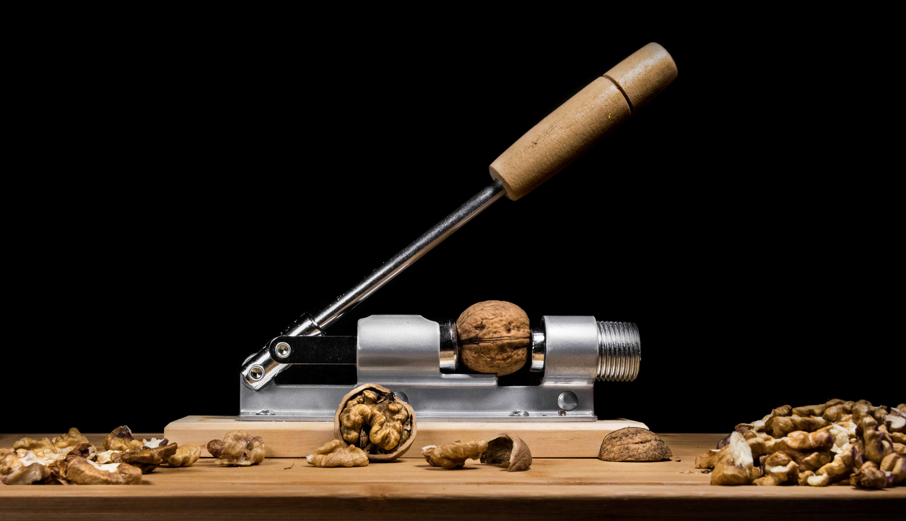
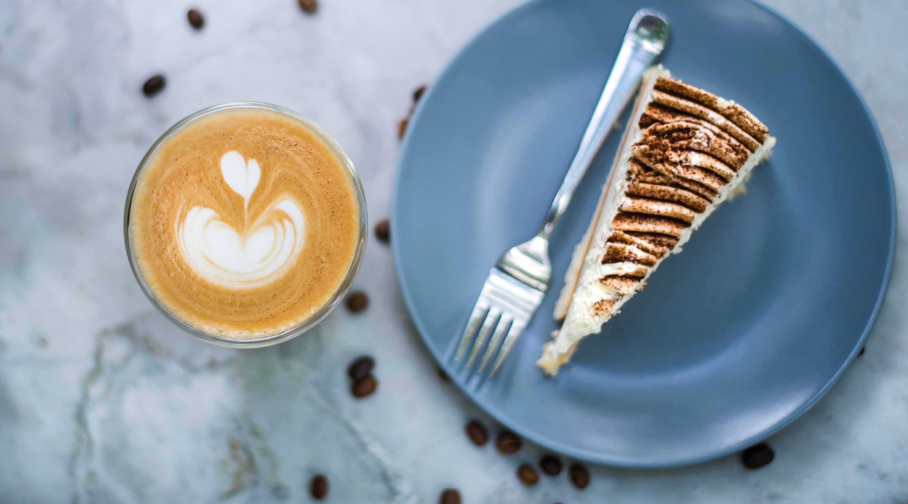
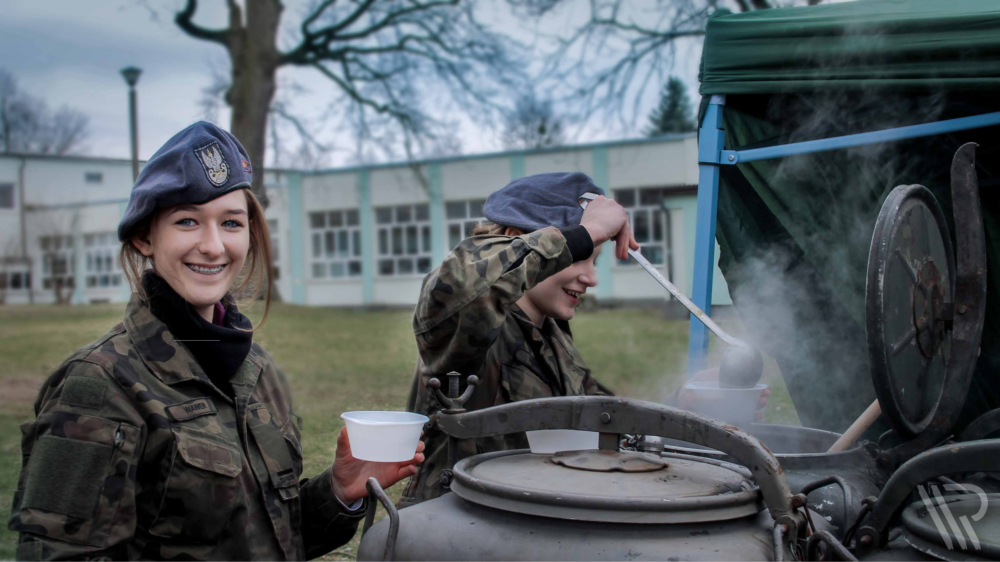
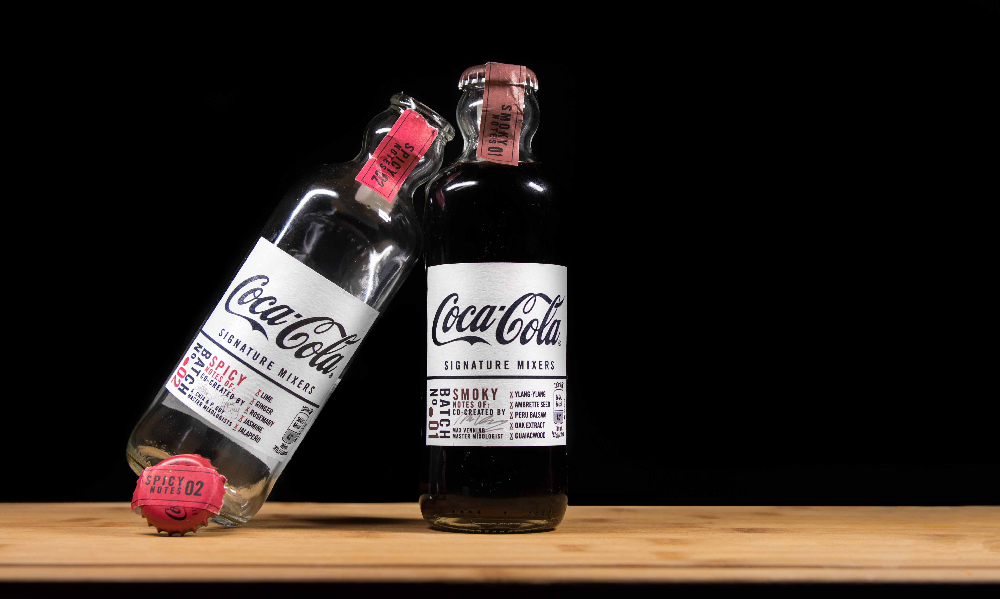
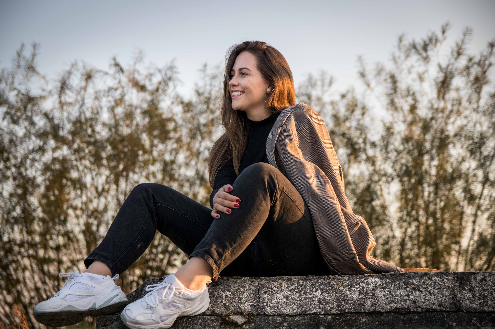
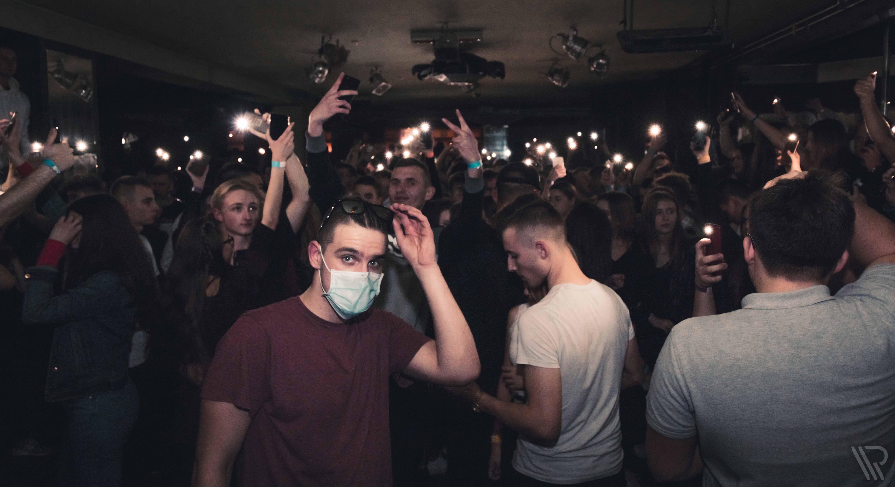

2020
Fotografia jako potężne medium wyrazu i komunikacji oferuje nieskończoną różnorodność
postrzegania, interpretacji i działania. Ansel Adams
Kontakt
Moje Sesje
WITAM, NAZYWAM SIĘ
Rafał Wojdat
Fotografia jest moją pasją, czymś co sprawia że życie nabiera kolorów, a każdy uchwycony przeze mnie moment
to coś więcej niż zlepek pikseli. Jestem aspirującym fotografem o ciekawym spojrzeniu na świat oraz
niebanalnymi pomysłami. Obecnie studiuję fotografię na Warszawskiej Akademii Fotografii Uwielbiam
współpracować z ludźmi, a sam oferuję pełen profesjonalizm.
Moje Usługi









